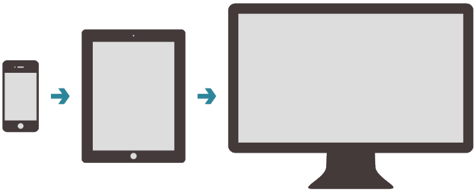

Future-Friendly Web Design for Libraries
presented by
Michael Schofield
talks.ns4lib.com
Card Catalog
The m.library Workload
2 x Work
/ 1 x $$$
= sad librarian
and probably a terrible website
Quicksand
Design Ethically
Libraries on the Web are bought by taxes and tuition
- Developing for specific platforms targets only the handful that own the device.
- Developing for enough platforms to be inclusive is costly.
- Designing for specific screens--for instance, a desktop website and a mobile website--will inevitably miss the mark.
It is a disservice if a library pursues a web strategy that inevitably caters to less than the majority of its patrons.
It is wasteful if a library pursues a web strategy that requires substantial retrofitting or a redesign more than once a year.
Seek Ubiquity
Future Friend.ly #FFLY
www.futurefriend.ly
Future Friend.ly #FFLY
- Anticipate disruption.
-
Laser Focus
s i m p l i f y
Focus your library service before your patrons do it for you.
-
COPE: Create once, publish everywhere
- Separating content from presentation allows for reuse.
- Responsive Web Design
Get your content ready to go anywhere because it's going to go everywhere.
Key Concepts: Fluidity
Responsive Grids
↓
Wait! What's a grid? Review

Rapidly Layout Your Site ( ... this is awesome )
High Calorie Grids
Out-of-the-Box Grids are Bloated
... but Invaluable
<div class="row">
<div class="eightcol first">
<div class="carousel">
<!--Put your slides here-->
</div>
</div>
<div class="fourcol last">
<aside class="welcome">
<!--Content-->
</aside>
</div>
</div>
What is a Fluid Grid?

.wrap {
margin: 0 auto;
width: 90%;
max-width: 1140px; /* <= not necessary, if you're brave */
}
.onecol { width: 5.801104972%; }
.twocol { width: 14.364640883%; }
.threecol { width: 22.928176794%; }
.fourcol { width: 31.491712705%; }
.fivecol { width: 40.055248616%; }
.sixcol { width: 48.618784527%; }
.sevencol { width: 57.182320438000005%; }
.eightcol { width: 65.74585634900001%; }
.ninecol { width: 74.30939226%; }
.tencol { width: 82.87292817100001%; }
.elevencol { width: 91.436464082%; }
.twelvecol { width: 99.999999993%; }
.onecol, .twocol, .threecol, .fourcol, .fivecol, .sixcol,
.sevencol, .eightcol, .ninecol, .tencol, .elevencol, .twelvecol {
position: relative;
float: left;
margin-left: 2.762430939%;
}
.first { margin-left: 0; }
.last { float: right; }Your Library is no
longer a pin on the map,
but your patrons expect more.
A responsive grid isn't good enough.
↓
- 31% of adults use their phones for the majority of their access to the web. (source )
- Preference among all age groups is shifting away from dekstops and latops toward mobile devices (source)
- Provide eBooks? Your patrons are probably reading them on their phones or high-end tablets, not e-readers (source) That is, unless they're stopped by DRM. Then, savvy users will probably just pirate them. = ).
Convinced?
Good
Most of my thoughts about mobile are tied up into the promise of RWD.Amanda Goodman
UX Librarian
This Makes Sense
- Low barrier of entry. While tedious and painful, it's not too difficult to retrofit an existing site with a grid.
- DRY content <= biggie
Steal from Colleagues
- Eric Rumsey lists 57 [so far ... ] higher-ed institutions, academic and public libraries with responsive sites. [here]
- Matthew Riedmsa's ALA talk Responsive Web Design for Libraries: Get Beyond the Myth of the Mobile Web".
- An awesome, useful, growing visual reference called The Web for Libraries (Design Patterns) ... by me
Key Concepts: Mobile First
The commmitment to a mobile-first design means removing technological barriers to library access.
- Consider the lowest common denominator: a small screen with a painfully slow 3G connection at peak time.
- Don't worry: while mobile-first is about simplification, it isn't about penalizing the patron with the retina macbook.
Progressive Enhancement yahtzee!
Mobile-First Makes for Better Content
... which is good, because mobile patrons can be a little picky
- 71% of people expect mobile sites to load as fast or faster (really!? - yep) than stationary desktops
- 74% will abandon your site if it takes more than 4 seconds to load.
- Mobile browsers will choose not to load content that is too large.
- Blackberries will not load websites larger than 3MB (Error 413: Entity too large)
- Many international data plans are pay per kilobyte
- Unlimited data in the U.S. is endangered. Design Accordingly
Anatomy of a Mobile-First Stylesheet
@media only screen and (min-width: /* your breakpoint */ ;) {
/* your styles */
} Embrace the Cascade
- Load your base (mobile) styles first. Keep them light-weight. Hover effects aren't necessary.
- Load subsequent styles for increasingly larger devices in media queries.
- Common breakpoints are 480px (large mobile screens, e.g. iPhone 5 in Landscape), 768px (Tablets and small laptops), 1024px (some desktops, but most often those old square monitors), 1240px + (large[-ish] / widescreen).
Wait this is latin
The Cascade Review
Cascading Style Sheet
body {
width: 100px;
width: 20%;
width: -999999999999px;
width: 98%; /* <= bottom of the cascade */
}
Breakpoints Review
Target a device by its screen size
This way ..., it's kind of a lot
↓
/* ====================
* Phones
* ==================== */
@media only screen and (min-device-width: 320px) and
(max-device-width: 480px) { /* Styles */ }
/* ====================
* Large Phones, Small Tablets
* ==================== */
@media only screen and (min-width: 481px) { /* Styles */}
/* ====================
* Tablets and Small Laptops
* ==================== */
@media only screen and (min-width: 768px) { /* Styles */ }
/* ====================
* Desktops and Laptops
* ==================== */
@media only screen and (min-width: 1030px) { /* Styles */ }
/* ====================
* Large Screens
* ==================== */
@media only screen and (min-width: 1240px) { /*Styles */ }
... or target dense pixel devices Neat = )
/* ====================
* Retina Displays
- This applies to the retina iPhone (4s) and
- iPad (2, 3) along with other displays with
- a 2x resolution.
* ==================== */
@media only screen and (-webkit-min-device-pixel-ratio: 1.5),
only screen and (min--moz-device-pixel-ratio: 1.5),
only screen and (mix-device-pixel-ratio: 1.5) { /* Styles */ }
So, where was I ... ?
Oh Yes!
↓
/* ====================
* Mobile 1st Stylesheet!
* ==================== */
.embrace-the-cascade {
tip: write your most light-weight, basic
styles at the top of your CSS. Be simple. You
want them to load fast for mobile. Hover effects
are unnecessary.
}
/* ====================
* Large Phones, Small Tablets
* ==================== */
@media only screen and (min-width: 481px) {
.embrace-the-cascade {
tip: keep everything else inside media
queries. You can get fancier as the screens get
bigger.
}
/* ====================
* Tablets and Small Laptops
* ==================== */
@media only screen and (min-width: 768px) {
.embrace-the-cascade {
tip: I usually load my grid at this point.
} /* Are you getting it? */
What about Internet Explorer 8? sigh
Polyfills
A polyfill ... is a piece of code (or plugin) that provides the technology that you, the developer, expect the browser to provide natively.
Fake it with Javascript but fake smartly
The vocabulary around mobile-first design is oriented around weight. As in, the more code you write the heavier your library's website. If you make your users carry a brick, it is inevitable that many will drop it.
Good Performance is Good Design
Key Concepts: Performance
Best Really Good Practices
↓
The main thing is ease-up off the server
- Limit the Number of HTTP Requests
<!-- Stylesheets (CSS)
======================
--> <link rel="stylesheet" type="text/css" href="styles.css" media="all">
<!-- Javascript (JS)
======================
--> <script src="https://ajax.googleapis.com/ajax/libs/jquery/1.8.2/jquery.min.js">
<!-- Media
======================
--> <img src="icon.jpg" alt="huge icon">
<audio></audio>
<video></video>
Quick Fixes
- Follow Chris Coyier's 1-2-3 Rule of CSS
- Use Web Type and Common CDNs
- Turn all static graphics into a Sprite! (Sprite Cow)
Every little image is a chance to fail that's being kind of dramatic but you get me
<nav class="menu">
<ul>
<li> <img src="icon.jpg"> Books </li>
<li> <img src="icon.jpg"> Databases </li>
<li> <img src="icon.jpg"> Ask a Librarian </li>
</ul>
</nav>
Take Advantage of Modern Browsers
Shadows instead of graphics
-webkit-box-shadow: 2px 2px 4px #333;
-moz-box-shadow: 2px 2px 4px #333;
box-shadow: 2px 2px 4px #333; Gradients instead of graphics
background: -moz-linear-gradient(top, #006699 0%, #50afdf 100%); /* FF3.6+ */
background: -webkit-linear-gradient(top, #006699 0%,#50afdf 100%); /* Chrome, Safari */
background: -o-linear-gradient(top, #006699 0%,#50afdf 100%); /* Opera 11.10+ */
background: -ms-linear-gradient(top, #006699 0%,#50afdf 100%); /* IE10+ */
background: linear-gradient(to bottom, #006699 0%,#50afdf 100%); /* Eventual Standard */Transitions Instead of JS, .GIFs, or FLASH
.switch {
transition: left .2s ease;
}
.toggle-bg input:checked~.switch { left: -1px; }
.toggle-bg input~:checked~.switch { left: 41px; }
/* This lives at http://codepen.io/michaelschofield/ -
but it isn't very impressive =/ */
Sprites are Good, but Icon Fonts are Gold
An icon font is a dingbats-like font where vector graphics replace usual characters - like the letter c.
abcde
abcde
@font-face {
font-family: 'GlyphishRegular';
src: url('css/font/glyphish/glyphish-webfont.eot');
src: url('css/font/glyphish/glyphish-webfont.eot?#iefix') format('embedded-opentype'),
url('css/font/glyphish/glyphish-webfont.woff') format('woff'),
url('css/font/glyphish/glyphish-webfont.ttf') format('truetype'),
url('css/font/glyphish/glyphish-webfont.svg#GlyphishRegular') format('svg');
font-weight: normal;
font-style: normal;
}
h1.icon {font-family: 'GlyphishRegular';}
<h1 class="icon">abcde</h1>
The Joy of Cooking Semantic HTML and CSS
- The point is that complex designs that once relied on many graphics, are additional requests from a server, can be paired down to just one - the call to your CSS.
- Use javascript to enhance the experience or replicate modern CSS with polyfills for older browsers look at your analytics, because you might just want to pull a Google and drop IE8 altogether.
- The elephant in the room?
Resolution Independence
The Retina Problem
Looking Sharp!
- The knee-jerk reaction to retina was to make design graphics "@2x" Twice as big as they would be displayed. Not simple math: a 300px wide image is 120KB. At 600px wide? 406KB
- Inevitably pixels will be even more densely packed, making @2x graphics fuzzy.
“Because it looks pretty” is not a good enough reason to send a 1MB image over 3G—or, god forbid, something like the EDGE network.
Responsive Images
No Easy Solutions
Javascript and Headaches
The ubiquity of the web challenges the library's mission to be accessible to its community
- Anticipate weird web-ready devices and make fluid content
- Be accessible to the widest array possible users and design mobile-first.
- Build a virtual library that first performs well and only second looks great.